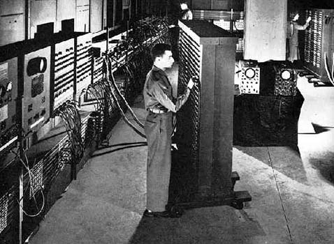

Computer Memory
A Brief Intro
11/28/14
Computer memory has come a long way. Early computers use of vacuum tubes stored just a few bytes. Even as tube technology progressed they were still physically sensitive to the environment. Perhaps the best use of tubes are in guitar and hi-fi amplifiers :)
Let's fast forward. Nowadays computers generally have two forms of memory, volatile and non-volatile memory. The term computer memory generally refers to the volatile form RAM (random access memory). This is very fast memory that can be written to and read from quickly. Volatile memory requires power to retain information, without power, it's gone. Non-volatile memory in today's computers refers to the hard drive. Most hard drives have spinning platters that are written to and read from. These mechanical memory storage devices have much higher capacity and cost much more per byte than RAM. They retain stored information with no power. A recent shift in non-volatile memory is the increasingly common Solid State Drive (SSD). These use flash memory - solid state, non-mechanical storage that is much faster than mechanical spinning platter hard drives.
The operating system (OS) manages memory, allocating what programs need to either RAM for quick access or the HD for longer storage. When RAM starts to reach capacity, the OS will use Virtual Memory which is simply space on the HD. The big disadvantage to Virtual Memory is speed. As mentioned earlier, RAM is much much faster than spinning HD's. Programs are installed on your HD and will primarily use RAM to run smoothly. Again, the speed of your HD can negatively impact how quickly a program will load or run, especially if they need to dip in to Virtual Memory.
This HD bottleneck is dramatically reduced or eliminated with the use of a SSD. What's the catch? SSD's are still significantly more expensive per byte than HD's. As computer prices inevitably drop over time, SSD's will eventually replace modestly sized HD's. HD's will still have their place for large capacity archiving purposes.
If you're trying to extend the life of your personal computer for a bit longer before replacing it, max out the RAM and consider upgrading your HD to a SSD. It could be a lot cheaper than a new computer and make your computer much faster than the first time you fired it up.